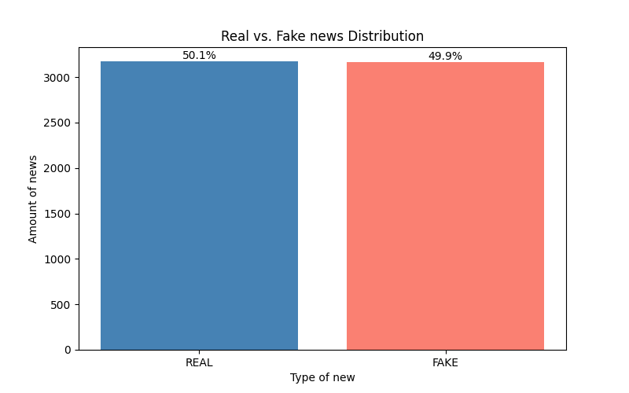

Automated classification report generated from the dataset analysis, text vectorization, model training, and evaluation pipeline.
This chart shows the balance between fake and real news entries in the dataset.

Rows represent actual labels and columns represent predicted labels.
| Prediction FAKE | Prediction REAL | |
|---|---|---|
| FAKE | 594 | 35 |
| REAL | 49 | 589 |
This table summarizes the types of classification errors made by the model.
| Actual Label | Predicted Label | Count |
|---|---|---|
| FAKE | REAL | 35 |
| REAL | FAKE | 49 |
Precision, recall, f1-score, and support for each class.
| precision | recall | f1-score | support | |
|---|---|---|---|---|
| FAKE | 0.923795 | 0.944356 | 0.933962 | 629.000000 |
| REAL | 0.943910 | 0.923197 | 0.933439 | 638.000000 |
| accuracy | 0.933702 | 0.933702 | 0.933702 | 0.933702 |
| macro avg | 0.933852 | 0.933777 | 0.933701 | 1267.000000 |
| weighted avg | 0.933924 | 0.933702 | 0.933699 | 1267.000000 |
Examples of texts where the model prediction did not match the real label, including score and confidence.
| Preview | Actual Label | Predicted Label | Score | Confidence |
|---|---|---|---|---|
| A president hellbent on destroying human decency would be toxic for my son and daughters. Listen up, fellow Republican moms, it's time to say enough i... | REAL | FAKE | -0.830584 | 0.831 |
| “I felt it is important to take the opportunity to meet the President-elect now before the drumbeats of war that neocons have been beating drag us int... | REAL | FAKE | -1.204076 | 1.204 |
| Defense Secretary Ash Carter used his personal email account to conduct some of his professional correspondence during his first months on the job ear... | REAL | FAKE | -0.098609 | 0.099 |
| Kentucky Gov. Matt Bevin (R) told religious conservatives at the Values Voters Summit this weekend that blood might have to be shed if Hillary Clinton... | REAL | FAKE | -0.231078 | 0.231 |
| The Trump alliance desires to remake the world in their own image, just as the class representing neoliberal globalization has insisted on doing so. T... | REAL | FAKE | -0.650182 | 0.650 |
| The scariest causes of death — war, murder, car accidents — are also some of the least common ways that we die. This fact is made abundantly clear in ... | REAL | FAKE | -0.332576 | 0.333 |
| (Before It's News) 43 here, 109 there and pretty soon 443 employees are dismissed Bank has to file ‘WARN notices’ with New York state agency The first... | FAKE | REAL | 0.788162 | 0.788 |
| GRAPHIC | A breakdown of what candidates talked about and who they interacted with.... | REAL | FAKE | -0.230842 | 0.231 |
| In the two years since the horrific marathon bombing, Boston has been nothing less than resilient. The city has stood defiant and proud even as it pai... | REAL | FAKE | -0.057449 | 0.057 |
| Pinterest As the Syrian Civil War rages on, the Russians continue to back the Assad regime in the fight against myriad rebel groups. The bloody confli... | FAKE | REAL | 0.383904 | 0.384 |
Examples of fake news articles correctly identified by the model.
| Preview | Actual Label | Predicted Label |
|---|---|---|
| Dead Coloradans are Lining Up to Vote for Hillary. Is the zombie apocalypse upon us? According to a report by the Washington Examiner , Local official... | FAKE | FAKE |
| By wmw_admin on October 30, 2016 By Timothy Fitzpatrick — The Fitzpatrick Informer Oct 29, 2016 Anno Domini Donald Trump and Mossad asset Ghislaine Ma... | FAKE | FAKE |
| Democratic presidential candidate Hillary Clinton waves as she takes the stage to speak at a fundraiser at the Paramount Theatre in Seattle, Friday, O... | FAKE | FAKE |
| October 27, 2016 at 4:21 PM Listen, it doesn’t matter who wins…the system can not mathematically go on the way it has…..so please dont make it sound l... | FAKE | FAKE |
| Jon Rappoport – Arianna Stassinopoulos, aka Huffington, is a Greek bearing gifts. For Hillary Clinton. The Huffington Post pretends it’s doing objecti... | FAKE | FAKE |
| Katie Gallanti – This is a key time in our collective humanity’s history… dark power versus true power, underhanded manipulative energy versus the cle... | FAKE | FAKE |
| LUCIFER in the Temple of the Dog II ‹ › GPD is our General Posting Department whereby we share posts from other sources along with general information... | FAKE | FAKE |
| Unbrexit! Parliament must vote on triggering article 50: the 9 funniest, most ironic reactions Britain has exploded today the news that the Government... | FAKE | FAKE |
| Geomagnetic storms can cause voltage corrections, false alarms- Space weather center lowered alert to moderate level storm Also see:... | FAKE | FAKE |
| This anti-Trump advert on the side of a bus is really visually clever and you have to see it in motion @Madsalbers over on Twitter writes, “Epic Bus A... | FAKE | FAKE |
Examples of real news articles correctly identified by the model.
| Preview | Actual Label | Predicted Label |
|---|---|---|
| LAS VEGAS — Katy Perry’s glamour, Tom Steyer’s money, Univision’s megaphone and organized labor’s muscle, along with a late assist from Barack Obama, ... | REAL | REAL |
| Shattering the glass ceiling wasn't the only way historic firsts took the floor in Philadelphia Tuesday night, when the Democratic Party named Hillary... | REAL | REAL |
| It was refreshing to moderate a "town hall" with the Libertarian presidential and vice presidential candidates last week because Govs. Gary Johnson an... | REAL | REAL |
| President Obama doubled down Friday on his push to shutter the Guantanamo Bay prison camp, calling it a magnet for “jihadi recruitment” and vowing to ... | REAL | REAL |
| Pope Francis has been brushing up on his English ahead of his arrival in Washington in September, and tickets to his U.S. events are already a hot com... | REAL | REAL |
| Puerto Rico defaults on a $422-million debt payment Sunday, but Congress can't agree on a rescue plan with both Democratic and Republican lawmakers wa... | REAL | REAL |
| Federal laws already allow people across the country the option to register to vote at the DMV. But Oregon and California's laws are pioneering becaus... | REAL | REAL |
| To watch the video of photographer Tim Tai getting pushed around by a turf-protecting scrum of protesters at the University of Missouri is to experien... | REAL | REAL |
| CHARLESTON, S.C. -- Andre McPherson has been coming to the Emanuel AME Church here off and on since 2003. His visit on Thursday night was his first in... | REAL | REAL |
| Less than a week before a bushel of 2016 Republican presidential hopefuls square off for the first time in two Fox News debates, billionaire businessm... | REAL | REAL |